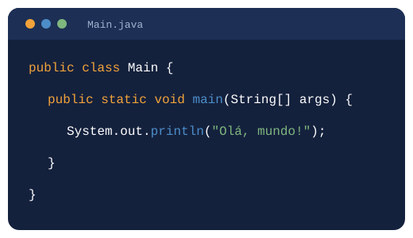

Escreva uma vez, rode em qualquer lugar
Esse era o lema do Java quando foi apresentado, em 1995. Quase 30 anos depois, continua entre as linguagens mais usadas do mundo.
Ver como funciona Ler a história
De onde veio o Java
O Java nasceu na Sun Microsystems, liderado por James Gosling. O projeto começou em 1991 com o nome Oak, pensado para aparelhos eletrônicos. O nome mudou para Java, inspirado no café, e a linguagem foi apresentada ao público em 1995.
Em 2010 a Sun foi comprada pela Oracle, que mantém o Java até hoje. O mascote da linguagem se chama Duke.
Como o Java funciona
O código passa por duas etapas antes de rodar, e é isso que permite usar o mesmo programa em qualquer sistema.
Main.java
Você escreve o código-fonte.
javac
O compilador gera o arquivo Main.class, o bytecode.
JVM
A Máquina Virtual Java executa o bytecode.
javac Main.java java Main
Onde o Java é usado
Sistemas de empresas
Bancos, seguradoras e grandes sistemas corporativos rodam em Java.
APIs com Spring
O Spring Boot é o framework mais usado para criar o back-end de aplicações.
Android
Os apps Android nasceram em Java e hoje também usam Kotlin.
Jogos
O Minecraft Java Edition é escrito na própria linguagem.
Style Guide e Design System
Os padrões usados para manter a página consistente.
Cores
Fontes
Sora: títulos
DM Sans: textos e botões
Ícones e formas
Ícones do Boxicons, cantos arredondados de 12px e espaços em múltiplos de 8px.
Contato
Projeto desenvolvido por Nicolas Hohl, estudante de Engenharia de Software na FIAP.